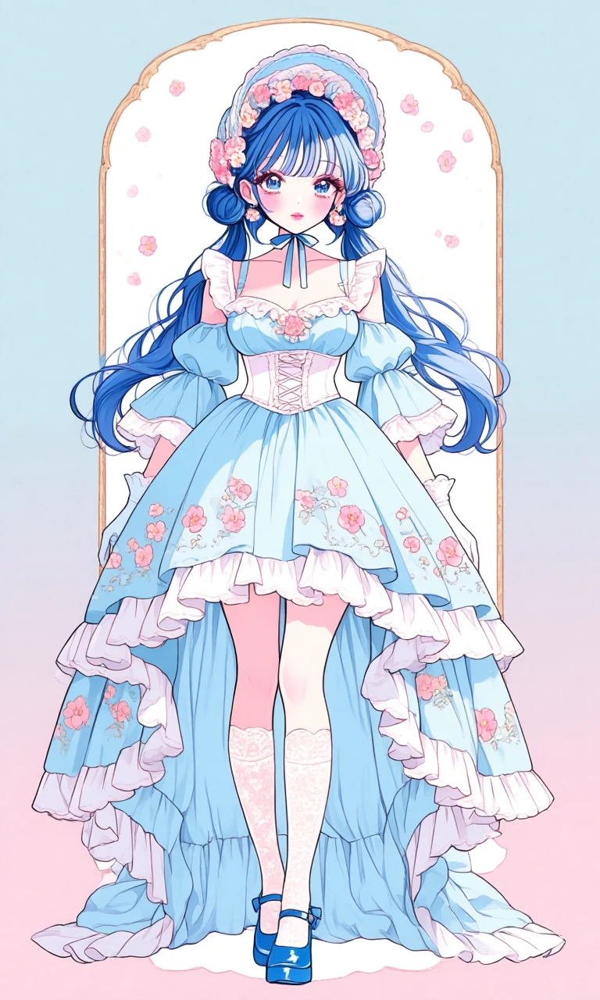
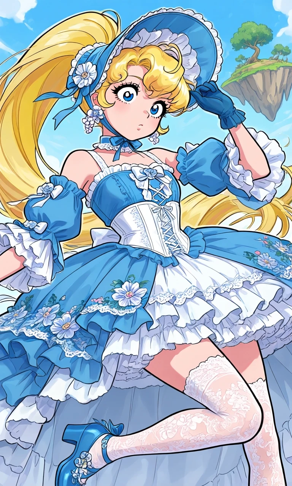

Bluebell Keepsake

Outfit Prompt
lolita fashion, sweet lolita, frills, blue mary janes, bonnet, flower hair accessories, flower earrings, flower choker, flower embroidery, detached puffy blue sleeves, white trim, white frilled trim, mismatched gloves, petticoat, frilled dress, multilayered dress, hi-low skirt, long skirt train, white lace knee high-stockings, dress, white lace corset, blue dress,
Outfit Examples



